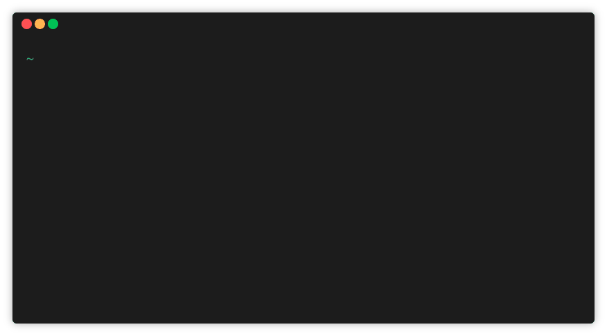
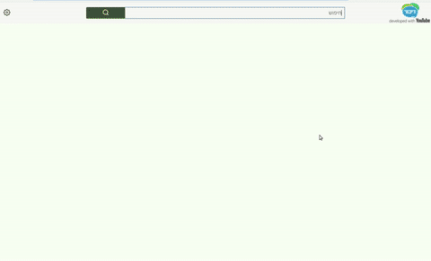
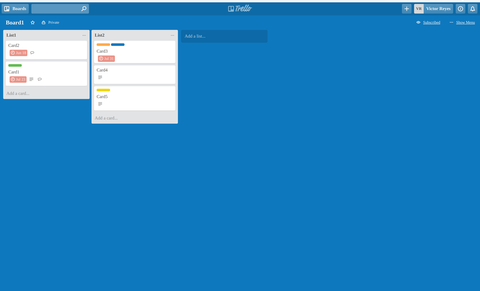

I am a software engineer based in Seattle, WA.
Co-author of CushionDB — an open-source, client-side database for PWAs that syncs with a server side component.
I am a software engineer based in Seattle, WA.
Co-author of CushionDB — an open-source, client-side database for PWAs that syncs with a server side component.
CushionDB is an open-source, offline-first database for progressive web apps that enables background, smart syncing in the web.
It is comprised of two parts:
- A client side component which stores data in IndexedDB and makes use of service workers and push notifications for syncing.
- A server side component comprised of a NodeJS server and a reconfigured CushionDB, both dockerized and running via a docker-compose image.

I presented my journey on building SpaceCraft for the QueensJS Meetup on February 6, 2019.

An online application that enables users with disabilities to interact with YouTube content using an eye-scanning camera (Grid 3). Built with JS & jQuery with a Sinatra back end. Deployed on Digital Ocean using NGINX.

A complex, feature-rich project management web application. Built with JS & React/Redux with a Ruby/Rails back end.